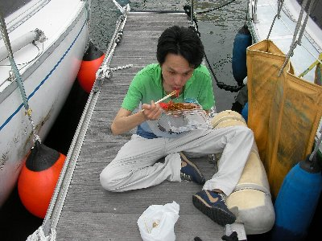
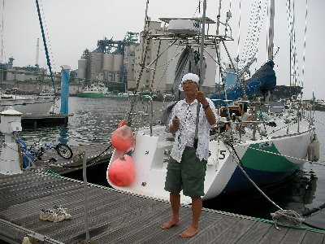
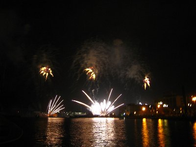

ヨットと花火 | 2010年8月 幹事：サムちゃん |
|---|---|
| 昨年は参加できなかった、清水花火大会をヨットから見よう！企画をサムちゃんが立ち上げてくれて、今年は参加しました。 花火は夜からなので、昼間はヨットに乗ろう！と言うことです。 10時開店を待って、エスパルスドリームプラザのスーパーで、食べ物やらビールを買い込み出発です。 今日は薄曇り。時々強い日差しが照りつけます。日焼け防止に、長袖は外せません。初参加のゆうこ姉は、半袖ですが大丈夫でしょうか。（まあ、後で酷い目に有ったみたいですが） 今日の風は、まずまず。強くもなく弱くもなく。全体に曇っているのか、沖に出ると景色が見えなくなります。すべて曇り。 でも、上は青空。いうなればガスっていると言う表現が正しいでしょう。富士山も見えません。 | |
 船上でガッツポーズ |  桟橋でお食事 |
| 海の色が、濁ったグレーから、真っ青に変わります。いつもながら綺麗な海だな〜 南からの風を一杯に受けて、とりあえず進路は東へ。 有る程度沖に出たところで、ビールで乾杯！ いや〜夏・海・ヨット・ビール！最高です♪ ヨットで沖に出るのが初参加の波平さん。先ほどから静かです。と思ったら気分が悪いらしく、お魚撒き餌係と状態悪化。ビールでお腹を冷やしたのが効いたらしい。 それでもヨットは東へ進む。が、今日は4時までには港に戻らなければならないため、昼前にUターン。 いつも思うけど、風の力だけでガンガン進むのね。すごいよヨット。デッキには所狭しと、ロープが張り巡らしてあったり、巻き取る道具が有ったりします。一本一本に意味が有り、もっと速度を出したり色々出来るのでしょう。 僕らではそこまで出来なく、サムちゃんに申し訳ないな〜なんて思っていたりします。もっとやってみたい！（こりゃ〜特訓でも必要か？） 帰る途中で、今度は釣り糸を垂れていた、たかにぃが体調不良。酔いか熱中症か。しばし横になる。 いづみさんは、お腹が空いたお腹が空いたとガッポガッポ食べていた。お昼すぎたしね。 清水港に帰り、今度は花火観戦の準備。と言っても、食糧の補充ですが。 | |
|  釣りじゃありません |  花火大会の始まり始まり |
| ドリームプラザ周辺には、凄い人だかり！ 場所取りは当然なれど、屋台なども出て賑わってます。スーパーに行ったら食べ物が大分減ってます。特にお蕎麦とか。暑いからサッパリしたもの売れまくりです。お蕎麦欲しかった。代わりにパスタで。（サッパリか？） ヨットでしばらくおしゃべりしたあと、所要が有るゆうこ姉と波平さん帰宅。ゆうこ姉は自転車で来ていたので、当然帰りも自転車です。暑いのにね。 花火は7時半から。私は今年初の花火大会です。 清水花火大会は、遠くから眺めたことは有るけれど、こんなに近くは有りませんでした。またこのヨットハーバーが良い位置に有るんです。ヨット関係者しか居ないから空いてるし、花火真正面で場所取りもせずに、悠々見ることが出来ました。差し入れのシャンパン飲みながらパスタ食べて、気分上々です。（パスタは焼そばの様にすすって食べているので、お洒落じゃないが） 写真をバッチリ撮りたかったのだけれど、桟橋がゆっくりと揺れているので、コンデジではブレまくり。動画も撮ったけど、コンデジ限界でノイジー映像のため使えない。残念。こんなことならビデオカメラ持ってくるんだった。 花火大会の後も、ヨットでおしゃべりして、人が空いてきたころを見計らい帰宅しました。 今回も誘ってくれて、サムちゃんありがとう！ヨットもっと勉強しなきゃダメかな。 | |
|  |  |
| 写真＆コメント ｂｙ べっしー | |